night · 报告 docs/night-run/night-report-round2-20261006.html · 执行窗口 03:05 – 05:35（约 2.5 小时）· 上轮债务清偿 + 架构级可视化升级今晚清偿了第一轮全部安全类待决策（5 项直接按推荐方案执行，不再有待决策区），修掉深度旅程挖出的 2 个严重缺陷——课程生成失败会把报错文本当课程内容落库（可被教师定稿）、课程生成结果区 Markdown 全裸奔——并落地 2 个打开界面就能看到的架构级升级（协作流水线甘特时间线、生成等待期六阶段协作面板），全部零新增运行时依赖。
| 指标 | 第一轮 | 第二轮 | 变化 |
|---|---|---|---|
| 遗留债务清偿 | 清偿 R2-DEF-001~003 + R-5/R-7 | 待决策区 5 项全部执行 + 旧巡查遗留 4 项（BUG-015/017/018/ENV-003）+ SEC-006 | 待决策区清零 |
| 新发现问题 | J-01~J-12（12 项） | J2-01~J2-07（7 项，深度链路） | 问题走向深层（业务数据污染级） |
| 修复/落地 | 10 commit | 10 commit | 持平，但含 2 个可视化升级 |
| GitHub 落地 | 2 项（守卫测试/降噪范式） | 2 项（Langfuse 式时间线 / MetaGPT 式阶段条） | 从"测试基建"到"用户可见" |
| 测试通过率 | 420 用例全绿 | 427 用例全绿（175+1skip / 252） | +7 条锁定新行为 |
| 回归 | — | 6/6 无复发 | 稳定 |
| 新增运行时依赖 | 0 | 0（仅 1 个 devDependency：jsx-a11y） | 守住冻结 |
每一处改动一张卡片：来源标签 + before/after + commit + 验证方式。G2 系列在前（架构级），F2 系列在后。
借鉴 langfuse/langfuse（35.4k★）trace 瀑布与 LangGraph Studio 的"一次运行为一组、按智能体分行、按真实耗时画条"范式，用项目 Tailwind 语言零依赖仿制：把 agent_execution_logs 持久化记录按 5 分钟间隔聚类为「协作批次」，甘特式呈现每个智能体的参与时段与耗时，诚实标注"真实记录，不是示意动画"，自动排除 <100ms 状态轮询心跳并注明数量。
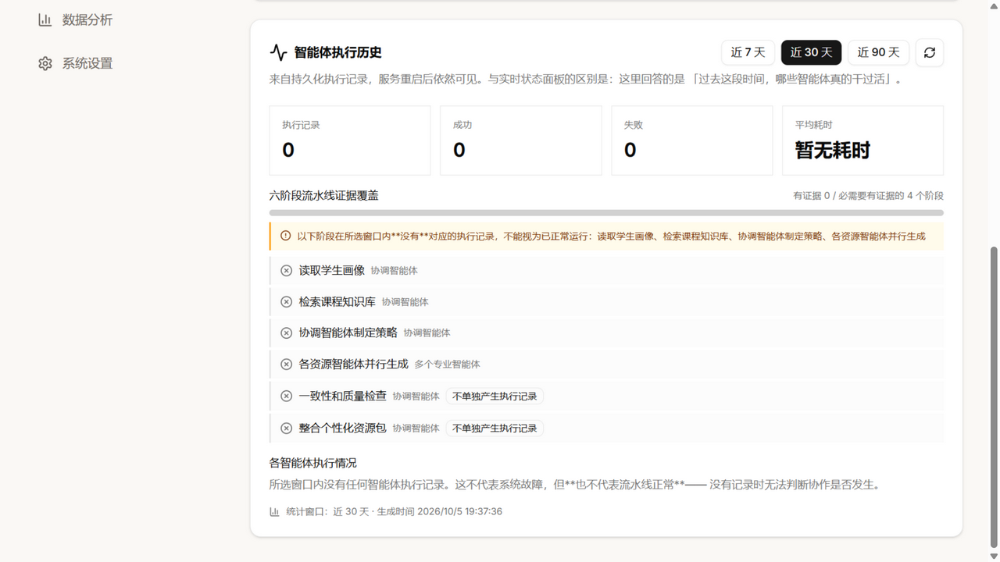
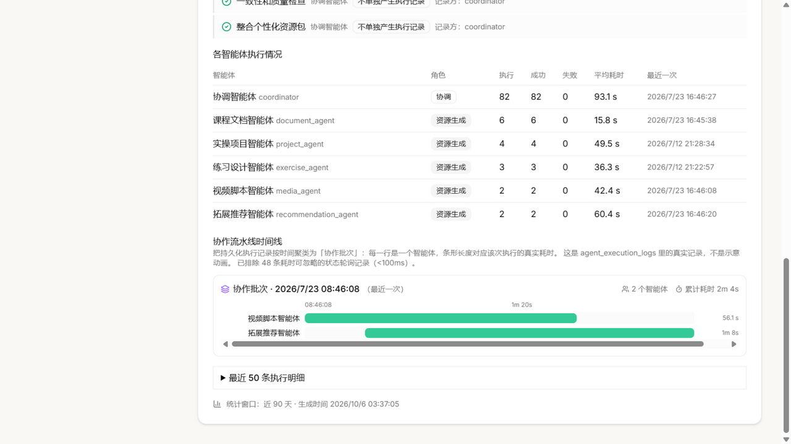
验证：新增 AgentPipelineTimeline 测试 6 条（批次聚类/泳道渲染/失败标注/心跳排除）+ 面板测试更新 6 条；浏览器实测确认真实数据渲染。
借鉴 geekan/MetaGPT（70.8k★）的 SOP 阶段条：确定性的阶段序列本身就有极强呈现力。生成等待期展示六阶段协作流水线（读取学生画像 → 检索知识库 → 协调制定策略 → 资源智能体并行生成 → 一致性检查 → 整合资源包，与后端 build_pipeline_coverage 同口径）+ 已等待秒数计时，诚实注明"生成完成前无法获取实时中间进度"。
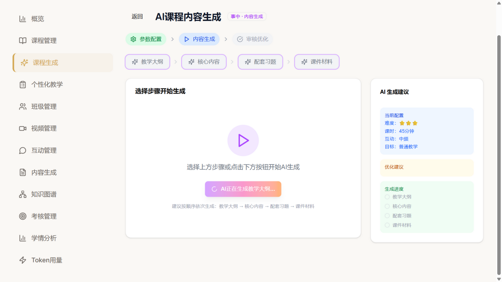
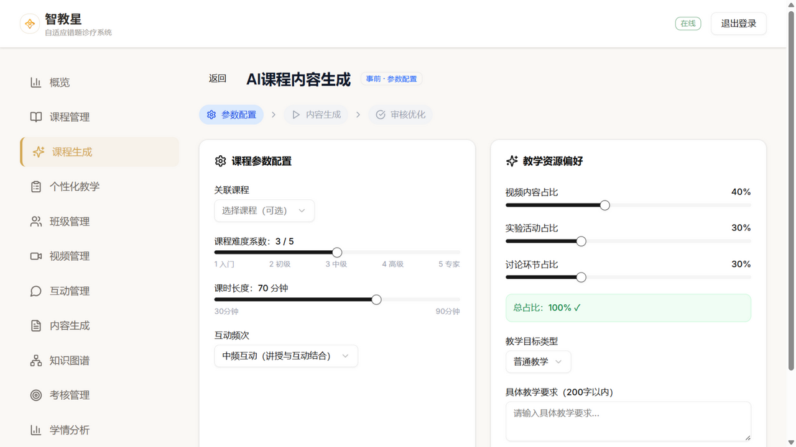
验证：浏览器实测（真实触发生成时截取）；阶段语义与后端流水线覆盖服务同口径。
深度旅程实测：Spark API 读超时后，后端把"生成失败，请重试。错误信息：…"作为 content 写进 CourseGenerationVersion（还占版本额度、挤掉最老版本），前端当正常内容展示并配"确认并继续"按钮——报错信息可被教师定稿成课程内容，属数据污染级缺陷。修复：失败显式短路返回 {error}（HTTP 400），不落任何版本；前端以行内错误条替代原生 alert。
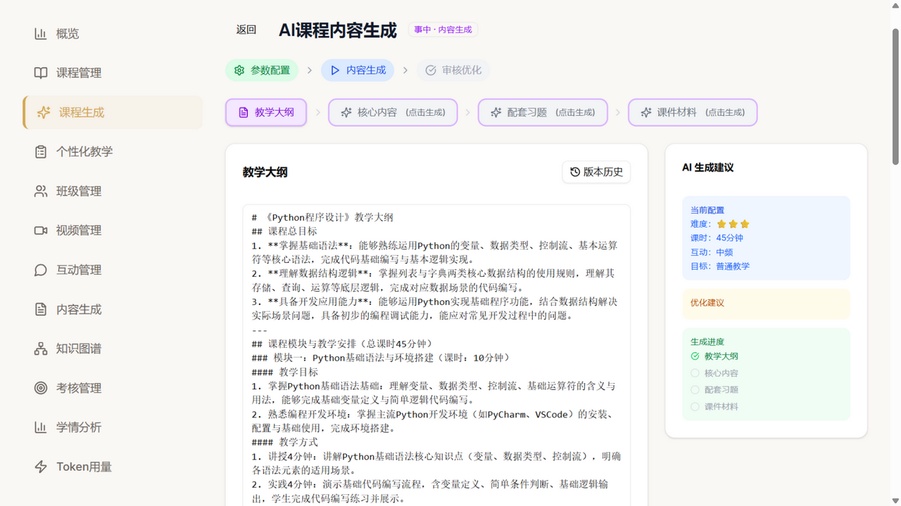
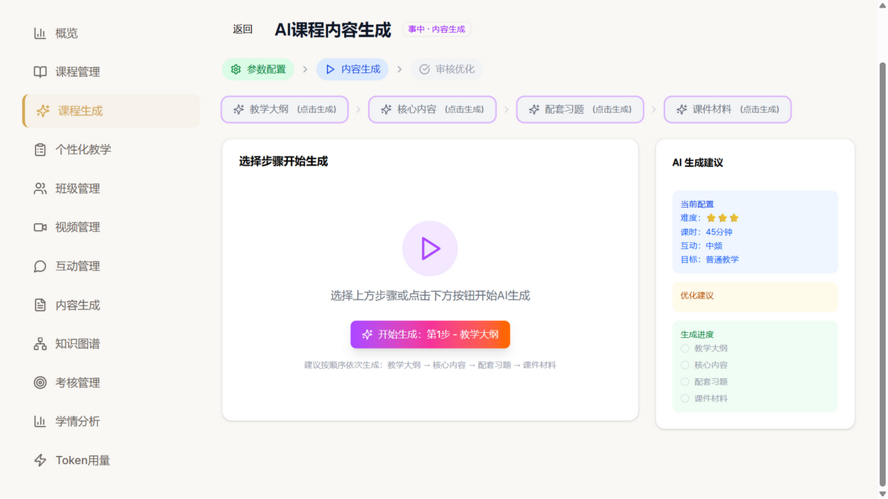
验证：新增后端测试 2 条（失败返回 error 且 0 条版本记录、超长异常截断 ≤250 字符），锁定行为防回退。诚实标注：修复后"成功生成 → 渲染预览"的端到端浏览器复验因 LLM 超时/服务中断未完成，转白天复核（代码已过 33/33 前端测试）。
第一轮 J-02（AI 助教 Markdown 裸奔）的同族缺陷：课程生成向导的结果区是 font-mono 的 Textarea，#/##/**/--- 全部裸奔。修复：复用第一轮的 markdownLite 共享组件，结果区默认渲染预览，提供「预览/编辑」双模式（编辑态保留原文修改能力），新生成内容自动回到预览。
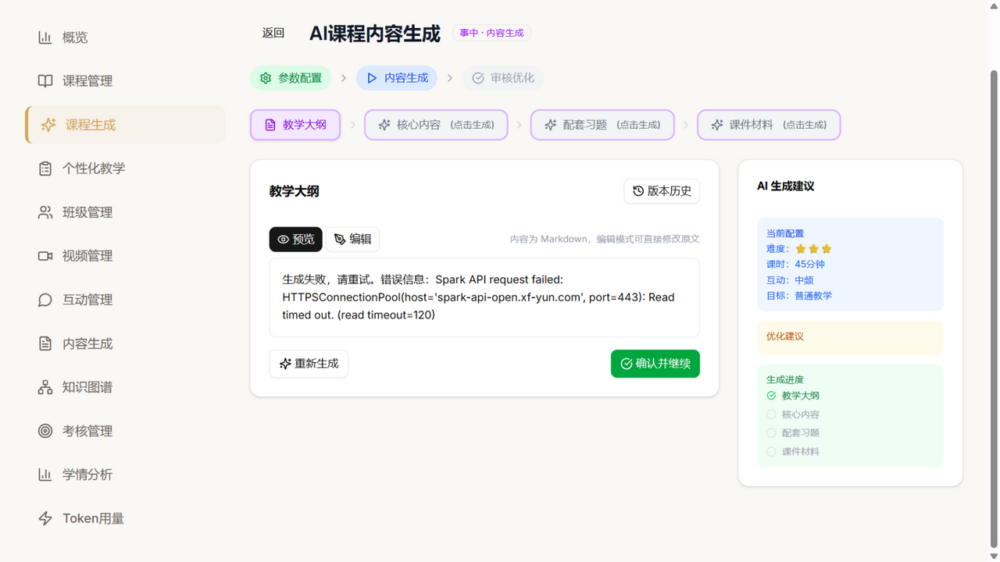
验证：markdownLite 组件 11 条既有测试覆盖渲染正确性；切换交互已浏览器实测。
采纳第一轮推荐方案：9 条搜索读路由（主搜索/courses/knowledge/contents/advanced/autocomplete/suggestions/recommendations/related）未认证可访问，而全站页面均需登录、落地页无搜索入口——无合法消费方，只有数据暴露面。全部补 @require_auth，守卫测试豁免清单同步移除，并新增测试锁定防回退。验证：18/18 测试通过；无界面变化（API 层），替代证据为测试输出。
系统设置里站点名早已是「智教星」、邮箱域 zhijiaoxing.com，但界面 29 处自称 EduAI Pro、5 处宣传 Spark4.0 Ultra。落地页/登录页/三端顶栏/引导页/页脚/浏览器标题全部统一为智教星，模型表述统一为"讯飞星火大模型"（与 README 和实际配置一致）。
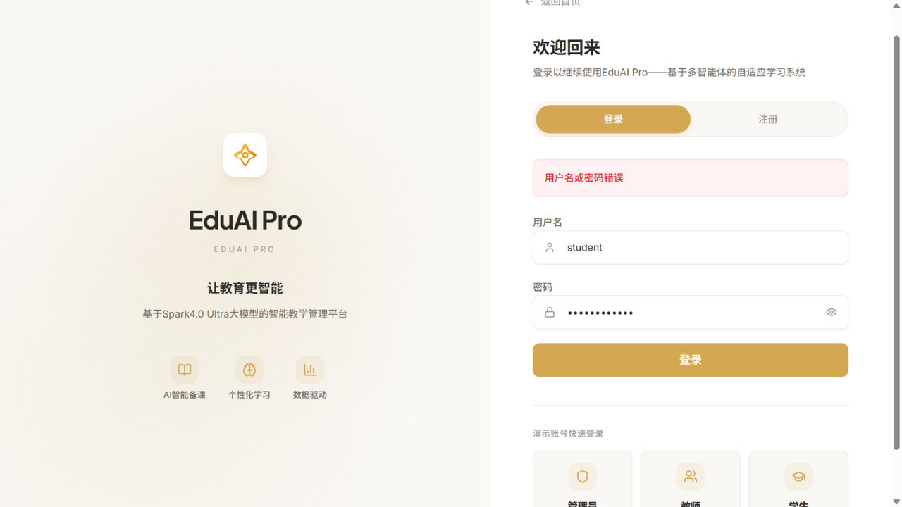
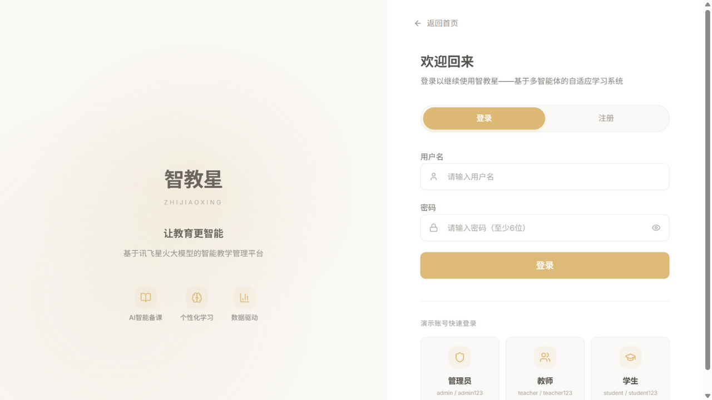
验证：grep 残留 0；33/33 相关测试通过。
四张高饱和渐变统计卡改为与全站一致的"浅色图标底 + 灰标签 + 深色大数字"白卡样式。修复过程自曝：首次替换曾因 ClipboardList 图标漏导入导致详情页渲染崩溃（错误边界正常兜底），已修复并复验——错误边界的存在恰好证明了它的价值。
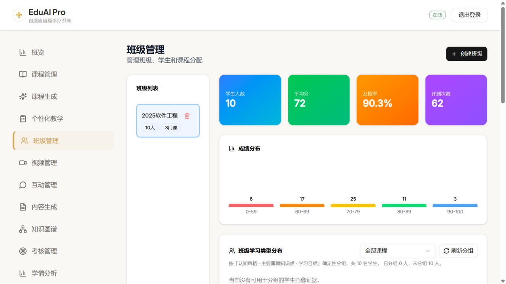
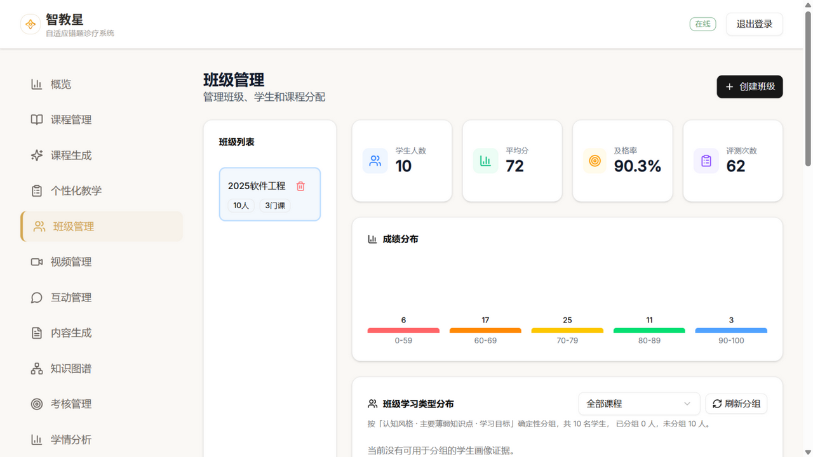
验证：班级面板测试 7/7；浏览器复验无崩溃。
上轮记为"未验证"，本轮实锤且比预期严重：connect 不校验身份；question_event/discussion_event 连 user_id 都不检查——知道 course_id 即可向课程房间广播伪造事件。修复：未登录 connect 返回 False（Flask-SocketIO 标准拒绝方式），两个事件补会话校验。验证：16/16 API 测试通过；无界面变化，替代证据为代码 diff + 测试。
router/index.jsx（275 行，全仓零引用，路由全在 App.jsx）→ d67b256backend/.env.example（只含变量名与说明，含 SEC-001 处置顺序提醒）→ 9292a66docs/audits/jsx-a11y-first-sweep-round2.txt → 6d53fb9验证：grep 零引用确认、lint 基线 0 errors（190→311 warnings，+121 全部为 a11y 清单）。
今晚的架构级升级都遵循同一条原则：画真实数据，不做示意动画。全部零新增运行时依赖。
| # | 坑位 | 动机 | 最小可行范围 | 验收标准 |
|---|---|---|---|---|
| P-1 | 依据链证据卡化（G2-03） | 学生端"生成依据"与教师端画像证据目前是文字列表，证据感弱（调研结论 #7：RAG 引用范式 Onyx/open-webui 共识） | 资源详情"生成依据"升级为角标 + 弹层证据卡；复用 profile_explainability 现有数据结构 | 学生打开任一生成资源可见证据卡，点角标弹原始证据 |
| P-2 | 生成过程 SSE 事件化（调研结论 #2） | G2-02 的"诚实声明"是权宜——真正解法是后端把生成链路包成 SSE 事件流（stage_start/agent_output/token/done） | 先改 course_generation 的 generate_step 为流式，前端消费事件流点亮 G2-02 面板 | 生成期间面板实时显示当前阶段与产出摘要 |
| P-3 | 后端时间契约统一（D-2） | utcnow 裸 UTC + isoformat 无时区标记，前端靠 apiDate 逐点兜底是防线不是解药 | base 层统一序列化钩子输出带 +00:00 的 isoformat + 全量回归（apiDate 对带时区串原样通过，兼容） | grep 无裸 isoformat；427 用例全绿 |
star 数均经 GitHub API 当日核实。完整调研见执行档案 .night-run/09-recon-round2.md。
| 仓库 | 呈现/架构好在哪 | 映射方案 | 结论 |
|---|---|---|---|
| langfuse 35.4k★ | trace 树 + 延迟瀑布甘特（行业共识形态） | 管理员端执行历史 → 协作批次甘特时间线 | 已仿制落地 G2-01 |
| MetaGPT 70.8k★ | Code = SOP(Team)：确定性阶段条自带叙事感 | 生成等待期六阶段流水线面板 | 已仿制落地 G2-02 |
| Onyx(原Danswer) 32.3k★ | SSE 类型化流包（reasoning/documents/citations）+ 步骤面板 | 生成链路 SSE 事件化，前端点亮实时进度（P-2） | 仅方案 坑位卡 P-2 |
| ChatDev 34.4k★ | 流水线回放器（教育叙事最贴） | 生成完成后"过程回放"抽屉 | 仅方案 |
| AutoGen 61.3k★ | Studio 消息流 + Debrief 复盘 | 协作消息流（与 P-2 同一套 SSE） | 仅方案 |
| vercel/ai-chatbot 21k★ | Reasoning 折叠块（流式展开/结束收起） | 学生端答疑"思考中"折叠块 | 仅方案 |
| RAG 引用范式（Onyx/open-webui 共识） | 编号角标 + 来源弹层 + 引用 chips | 依据链证据卡化（P-1） | 仅方案 坑位卡 P-1 |
| LangGraph Studio 42.7k★ | 状态机图 + 节点点亮 | cytoscape（已装）画静态编排图，仅管理员端 | 仅方案 信息密度对教师/学生过重 |
| langflow 155k★ | 节点画布 | 不引入——编排固定，画布属过度设计 | 不引入 |
| crewAI 59.4k★ | 任务层级日志数据模型 | 执行历史按"请求→阶段→智能体"分组 | 仅方案 |
| 第一轮修复 | 复现步骤重走 | 结果 | 证据 |
|---|---|---|---|
| J-01 时间戳 | 学生概览最近活动 | 无复发 | 2026/9/19 21:26:00 格式正确 |
| J-03 逗号 / J-04 标签 | 画像页两处取值 | 无复发 | 孤立逗号 false；学习节奏全域仅"偏慢" |
| J-06 时区 | 新建笔记 | 无复发 | 日期 2026/10/06 |
| J-07 确认框 | 删除笔记 | 无复发 | 应用内 AlertDialog，原生 confirm 为 none |
| J-08/J-09 空态 | 学习进度页 | 无复发 | "暂无学习时长数据"等空态存在 |
| R2-DEF 系列 | 单元测试锁定 | 无复发 | StudyNotes 31/31、MistakeBook 30/30、Search 34/34 |
| 编号 | 级别 | 现象 | 状态 |
|---|---|---|---|
| J2-01 | 严重 | 课程生成结果区 Markdown 裸奔（四个子步骤全中） | 已修复 90f018b |
| J2-02 | 一般 | 生成等待 90s 仅转圈按钮、进度仅一个绿勾 | 已修复 90f018b（G2-02） |
| J2-03 | 一般 | 执行历史默认 30 天窗口 0 记录，页面给出"流水线无法判断"误导解读 | 已修复 bab92d8（默认 90 天） |
| J2-04 | 一般 | AgentExecutionHistoryPanel 直出 UTC 墙钟（J-01 漏网） | 已修复 bab92d8 |
| J2-05 | 建议 | 数据分析页"平均学习时长 31h"与"完成率 0%"口径反差 | 记录 与 J-05 同族口径问题 |
| J2-06 | 严重 | 生成失败的报错文本被当内容落库，可被教师定稿成课程内容 | 已修复 90f018b（后端短路+测试锁定） |
| J2-07 | 一般 | 教师概览最近活动/Token 记录仍是裸 UTC 串（J-01 漏网） | 已修复 4840421 |
| 检查项 | 结果 | 说明 |
|---|---|---|
| 前端单元测试 (jest) | 28 套件 252/252 | +6 时间线测试、+2 生成失败相关前端回归 |
| 前端构建 (vite build) | 成功 15.16s | verify_all.ps1 一键验证通过 |
| 后端测试 (pytest) | 175 过 / 1 跳过 | +2（生成失败短路锁定） |
| lint | 0 errors | warnings 190→311（+121 为 a11y 首轮清单，warn 级不阻塞） |
| 回归自检 | 6/6 无复发 | 今晚改动互相不打架：品牌替换后 33/33 相关测试过 |
| 仓库最终状态 | 干净 · 全绿 | 构建产物已还原，无未跟踪残留 |
| 审查对象 | 状态合理性 | 审美主流度 | 「高级感」评审 |
|---|---|---|---|
| 协作流水线时间线 | pass | pass 泳道/色条/刻度克制 | 真数据可视化，不是装饰动画——正是"显得专业"的关键 |
| 六阶段等待面板 | pass 等待计时+诚实声明 | pass 紫色系与主题一致 | 消除 90s 焦虑；"声明不能实时获取进度"避免了假进度欺骗 |
| 登录页品牌 after | pass | pass | 品牌一致性本身即专业感来源 |
| 班级管理白卡 after | pass | pass | 与全站语言统一 |
| 移动端视口 | 抽查 | 本轮未重复走查（第一轮已 pass；今晚改动均为桌面端组件） | |
| 改动 | before/after 截图 | commit | 验证方式 | 审计 |
|---|---|---|---|---|
| G2-01 时间线 | ✓ / ✓ | bab92d8 | 12 条测试 + 浏览器 | 完整 |
| G2-02 阶段面板 | ✓ / ✓ | 90f018b | 浏览器实测 | 完整 |
| J2-06 失败短路 | ✓ / 部分（成功态留白天复核，失败路径有测试锁定） | 90f018b | 2 条后端测试 | 部分，已如实标注 |
| J2-01 预览模式 | ✓ / 切换交互已验，正常内容渲染待复核 | 90f018b | markdownLite 11 条测试 | 部分，已如实标注 |
| D-1 搜索守卫 | 无界面变化（API 层） | d0de19b | 18/18 测试 | 替代证据充分 |
| D-3 品牌统一 | ✓ / ✓ | 299dda6 | grep 0 残留 + 33/33 测试 | 完整 |
| V-01 班级卡 | ✓ / ✓ | ece513f | 7/7 测试 + 浏览器 | 完整（含崩溃自曝） |
| SEC-006 / BUG-017 / 015 / 018 / ENV-003 / D-6 / J2-07 / J-05 | 无界面变化或清单存档 | 3d04ce5 / 9292a66 / d67b256 / 6d53fb9 / 4840421 | 测试 / grep / lint 基线 | 替代证据充分 |
| commit | 类型 | 主题 |
|---|---|---|
| bab92d8 | feat | 协作流水线时间线（G2-01 + J2-03/J2-04） |
| 90f018b | fix | 生成失败短路 + 结果区预览 + 等待面板（J2-06/J2-01/G2-02） |
| d0de19b | fix | 搜索读路由补鉴权（D-1） |
| d67b256 | chore | 清偿 BUG-015/018/ENV-003 |
| 9292a66 | docs | .env.example（BUG-017） |
| 299dda6 | fix | 品牌统一智教星（D-3/J-10） |
| ece513f | fix | 班级统计卡设计语言（V-01/J-12） |
| 6d53fb9 | chore | jsx-a11y 接入与首轮清单（D-6） |
| 4840421 | fix | 教师端时间戳 + 成绩趋势口径（J2-07/J-05） |
| 3d04ce5 | fix | WebSocket 鉴权（SEC-006） |
证据截图：docs/screenshots/night-run/round2/（11 张）+ 第一轮目录引用；审计清单 docs/audits/jsx-a11y-first-sweep-round2.txt；工作档案 .night-run/。